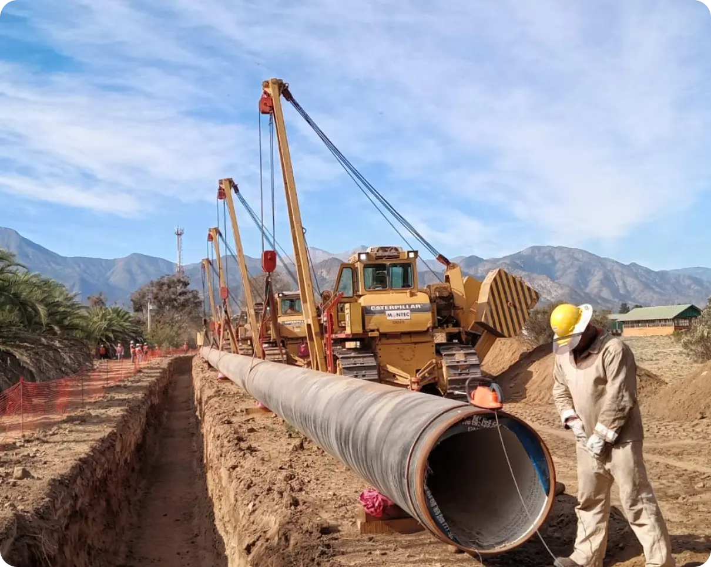
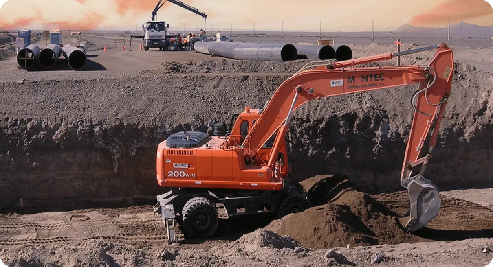

En MONTEC S.A., desarrollamos proyectos de infraestructura en sectores clave para el crecimiento del país. Contamos con más de 30 años de experiencia en la ejecución de obras sanitarias, mineras, públicas e inmobiliarias, entregando soluciones eficientes y sustentables con los más altos estándares de calidad y seguridad.
Somos especialistas en la ejecución de proyectos sanitarios a gran escala, trabajando con las principales empresas del país para garantizar el acceso a servicios básicos esenciales. Nuestra experiencia abarca la construcción de plantas de tratamiento de aguas servidas y potabilizadoras, la instalación y rehabilitación de redes de agua potable y alcantarillado, así como la implementación de sistemas de colectores de aguas lluvias. Nos enfocamos en la optimización de recursos y el uso de tecnologías innovadoras para reducir el impacto ambiental y mejorar la eficiencia de cada proyecto.
Además de las tradicionales obras de tuberías para agua potable, Montec introdujo tuberías de HDPE y reemplazando/recuperando antiguas tuberías de Hormigón, Asbesto Cemento y Fierro fundido a través del sistema “cracking” denominación aplicada por Montec para llamar al sistema “trenchless” de Introducción de tubos de HDPE a través de las tuberías existentes sin excavación a cielo abierto.
Los Inmisarios son estructuras diseñadas para captar el agua necesaria para los procesos, mientras que los Emisarios permiten la descarga controlada de los efluentes generados durante dichos procesos.
Plantas de tratamiento de aguas servidas: preliminar, tratamiento primario y secundario han sido recurrentes en nuestro desarrollo constructivo. Construcción de plantas de agua potable que se han desarrollado en las grandes urbes, tales como la Planta Potabilizadora del Parque Padre Hurtado en la comuna de La Reina de 2.500 lps .
Nuestros servicios de montaje electromecánico abarcan una amplia gama de aplicaciones, desde instalaciones industriales y comerciales hasta proyectos de infraestructura. Nuestro equipo de expertos en ingeniería y construcción está capacitado para llevar a cabo proyectos de montaje electromecánico de cualquier escala y complejidad. Trabajamos en estrecha colaboración con nuestros clientes para entender sus necesidades y proporcionar soluciones que cumplan con los estándares más exigentes.
Nuestros servicios de montaje industrial abarcan una amplia gama de aplicaciones, desde la instalación de maquinaria y equipos hasta la construcción de plantas industriales completas. Trabajamos en estrecha colaboración con nuestros clientes, comprendiendo sus requisitos y adaptándonos a sus necesidades específicas.
Nuestros servicios de movimientos de tierra abarcan una amplia gama de actividades, que incluyen excavaciones, nivelación de terrenos, remoción de escombros, preparación de bases, construcción de terraplenes, entre otros. Trabajamos en estrecha colaboración con nuestros clientes para comprender sus necesidades específicas y brindar soluciones personalizadas.
Nos encargamos de todo el proceso del proyecto, desde la conceptualización hasta la puesta en marcha final. Trabajamos en estrecha colaboración con nuestros clientes para comprender sus requisitos específicos y ofrecer soluciones personalizadas que se adapten a sus necesidades y objetivos.
Las impulsiones de agua exigen grandes estaciones de bombeo cuya potencia es representada por bombas de alta presión que sobrepasan los 1500 HP en hasta 8 bombas por estación.
Nos enorgullece ofrecer servicios especializados en emisarios submarinos. Con un profundo conocimiento en esta área, nuestro equipo de expertos en ingeniería y construcción se dedica a diseñar y construir emisarios submarinos eficientes y confiables, garantizando una gestión adecuada y sostenible de los efluentes.
Nuestros servicios de mantención de redes abarcan una amplia gama de actividades, incluyendo inspección, limpieza, reparación y mantenimiento preventivo. Trabajamos en estrecha colaboración con entidades gubernamentales, empresas y comunidades, brindando soluciones personalizadas y adaptadas a las necesidades específicas de cada proyecto.
La minería es uno de los pilares de la economía chilena, y en Montec S.A. desarrollamos infraestructura esencial para el sector. Contamos con amplia experiencia en la construcción de grandes conducciones de fluidos, montajes electromecánicos y sistemas de captación para plantas desalinizadoras. Nuestra capacidad técnica y operativa nos permite abordar proyectos de alta complejidad en condiciones extremas, asegurando la eficiencia y durabilidad de cada obra.
Grandes conducciones de fluidos en diferentes materiales como acero, HDPE y hierroductil.
Ofrecemos soluciones especializadas en Inmisario y Emisario para procesos industriales. Los Inmisarios son estructuras diseñadas para captar el agua necesaria para los procesos, mientras que los Emisarios permiten la descarga controlada de los efluentes generados durante dichos procesos. En Montec S.A., comprendemos la importancia de contar con sistemas bien diseñados y construidos que cumplan con los estándares de calidad, seguridad y regulaciones ambientales.
Plantas de tratamiento de aguas servidas: preliminar, tratamiento primario y secundario han sido recurrentes en nuestro desarrollo constructivo. Construcción de plantas de agua potable que se han desarrollado en las grandes urbes, tales como la Planta Potabilizadora del Parque Padre Hurtado en la comuna de La Reina de 2.500 lps.
Las plantas desalinizadoras se alimentan de agua de mar captadas por tuberias de HDPE instaladas en el lecho del fondo marino.
Nuestros servicios de montaje electromecánico abarcan una amplia gama de aplicaciones, desde instalaciones industriales y comerciales hasta proyectos de infraestructura.
Nuestros servicios de montaje industrial abarcan una amplia gama de aplicaciones, desde la instalación de maquinaria y equipos hasta la construcción de plantas industriales completas. Trabajamos en estrecha colaboración con nuestros clientes, comprendiendo sus requisitos y adaptándonos a sus necesidades específicas.
Nuestros servicios de movimientos de tierra abarcan una amplia gama de actividades, que incluyen excavaciones, nivelación de terrenos, remoción de escombros, preparación de bases, construcción de terraplenes, entre otros.
Nos encargamos de todo el proceso del proyecto, desde la conceptualización hasta la puesta en marcha final. Trabajamos en estrecha colaboración con nuestros clientes para comprender sus requisitos específicos y ofrecer soluciones personalizadas que se adapten a sus necesidades y objetivos.
Las impulsiones de agua desalinizada exigen grandes estaciones de bombeo cuya potencia es representada por bombas de alta presión que sobrepasan los 1500 HP en hasta 8 bombas por estación.
Trabajamos en alianza con entidades gubernamentales para mejorar la infraestructura pública en todo el país. Desde plantas de tratamiento hasta redes de agua potable y alcantarillado, participamos en proyectos que impactan directamente la calidad de vida de las comunidades. Nuestra experiencia con el Ministerio de Obras Públicas y distintos municipios nos permite desarrollar soluciones a medida para cada necesidad, garantizando la eficiencia y sostenibilidad de cada iniciativa.
Plantas de tratamiento de aguas servidas: preliminar, tratamiento primario y secundario han sido recurrentes en nuestro desarrollo constructivo. Construcción de plantas de agua potable que se han desarrollado en las grandes urbes, tales como la Planta Potabilizadora del Parque Padre Hurtado en la comuna de La Reina de 2.500 lps.
La urbanización y el crecimiento de las ciudades requieren soluciones eficientes y sustentables. En Montec S.A., nos especializamos en el desarrollo de proyectos inmobiliarios que incluyen redes de agua potable, alcantarillado, electricidad y pavimentación. Nuestro enfoque está en la optimización de recursos, el uso de materiales innovadores y la integración de tecnologías que mejoren la calidad de vida de las personas y la sostenibilidad del entorno.
Montec de acuerdo a su experiencia realiza el 100% de las obras necesarias para la urbanización.
Nuestro equipo de expertos está aquí para ayudarte. Contáctanos y deja en manos de Montec la responsabilidad para que tu proyecto sea un éxito.